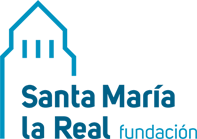

Emprender es tomar decisiones con incertidumbre, presión y mucha implicación personal. Gestionar bien tus emociones y las de tu equipo es tan importante como tu idea de negocio.
Es la capacidad de reconocer, comprender y gestionar las propias emociones y de interpretar las de las demás personas para tomar mejores decisiones y relacionarnos mejor.
En un proyecto emprendedor se nota en cómo negocias, lideras, vendes, reaccionas ante un «no» y te recuperas de los días malos. No se trata de no sentir, sino de elegir cómo responder.
Las emociones no son un obstáculo para decidir: son información que conviene saber leer.
Idea clave para recordarSaber qué siento y cómo influye en lo que hago.
«Me noto nervioso/a»Gestionar impulsos y emociones intensas sin que decidan por mí.
«Respiro antes de responder»Mantener el rumbo y la energía pese a los obstáculos.
«Recuerdo para qué lo hago»Comprender lo que sienten y necesitan las demás personas.
«¿Qué necesita mi cliente?»Comunicar, negociar y colaborar de forma constructiva.
«Pido ayuda y feedback»Ponle una palabra concreta a la emoción: «frustración», «ilusión», «inseguridad».
Antes de una decisión o respuesta importante, respira y dale unos minutos.
Repite con tus palabras lo que te cuentan antes de dar tu opinión.
Pregunta cómo te perciben y qué podrías hacer distinto.
Cada noche, apunta en 3 minutos: qué situación viviste, qué emoción sentiste y qué necesitabas. Al cabo de una semana, busca patrones.